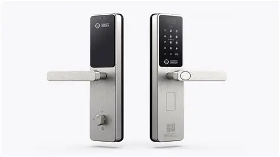
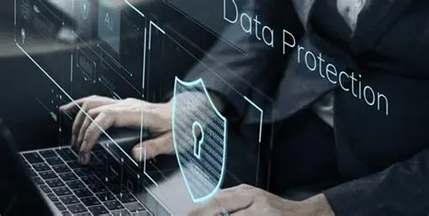
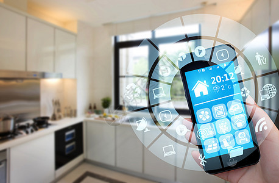

Smart Home Security Systems: Protecting Your Digital Life

As our homes become increasingly connected, security extends beyond traditional locks and alarms to encompass cybersecurity, privacy protection, and intelligent automation systems.
The Modern Security Landscape

Today's smart home security systems go far beyond simple burglar alarms. They integrate cameras, motion sensors, door locks, and environmental monitoring into cohesive systems that can be controlled remotely and respond intelligently to threats.
Leading platforms like Ring, ADT, and SimpliSafe offer comprehensive solutions that combine hardware, software, and professional monitoring services.
Key Security Components
Smart Cameras with AI-powered detection can distinguish between family members, pets, and potential intruders, reducing false alarms while maintaining security.
Smart Locks allow keyless entry through smartphones, temporary access codes for guests, and activity logging to track who enters and exits your home.
Cybersecurity Considerations

Smart home devices can become entry points for cybercriminals. Ensure your network is secured with WPA3 encryption, regular firmware updates, and strong, unique passwords for each device.
Consider creating a separate IoT network for smart home devices to isolate them from computers and phones containing sensitive personal information.
Privacy and Data Protection
Review privacy policies carefully and understand what data your security devices collect, how it's stored, and who has access. Many systems offer local storage options to keep sensitive footage on your premises.
Integration and Automation
Modern security systems integrate with smart lighting, thermostats, and other connected devices to create the appearance of occupancy when you're away, enhancing both security and energy efficiency.